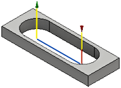

<div id="tool_feedPlunge"><p>Avance utilisée lors de la plongée verticale dans le brut.</p>
<table class="tipTable" cellspacing="10">
<tr>
<td><center></center></td>
</tr><tr>
<td><center><p><b>Plongée verticale affichée en rouge</b></p></center></td>
</tr></table>
</div>